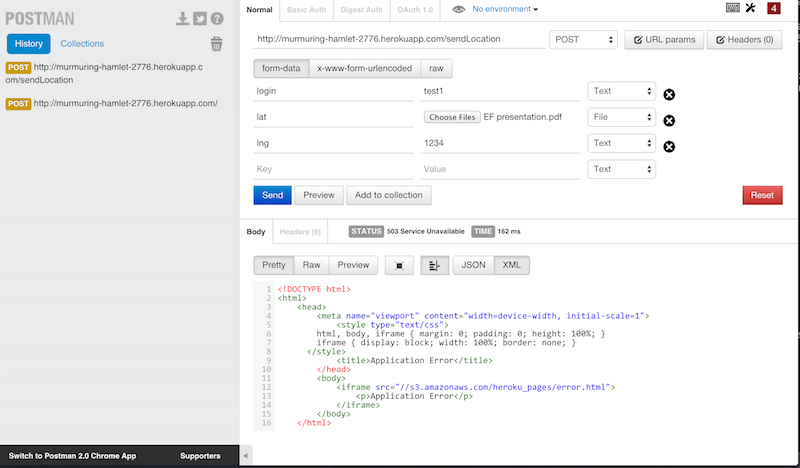
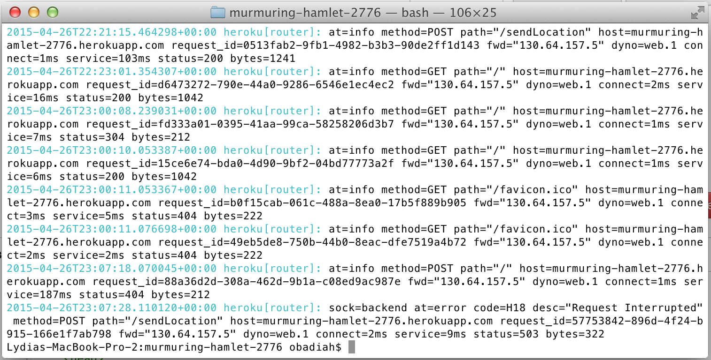
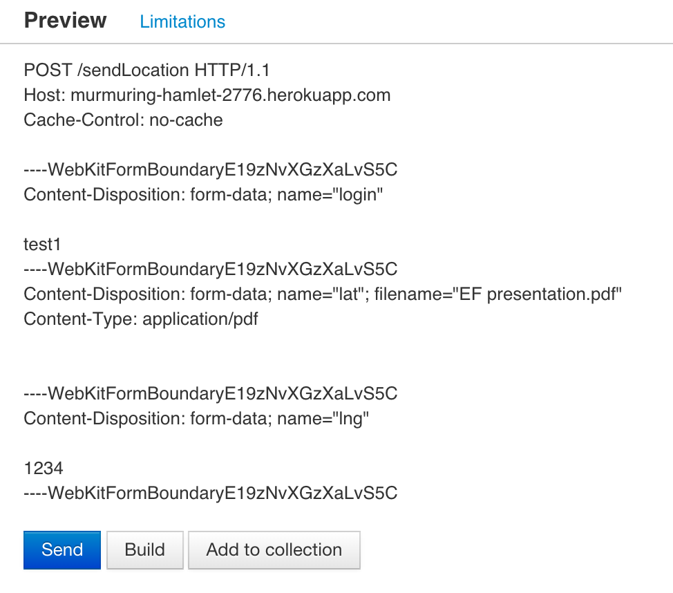
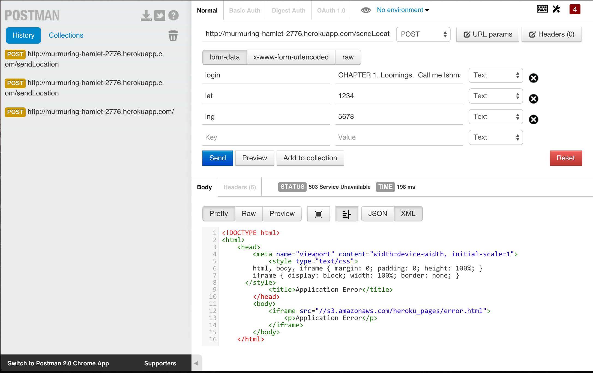
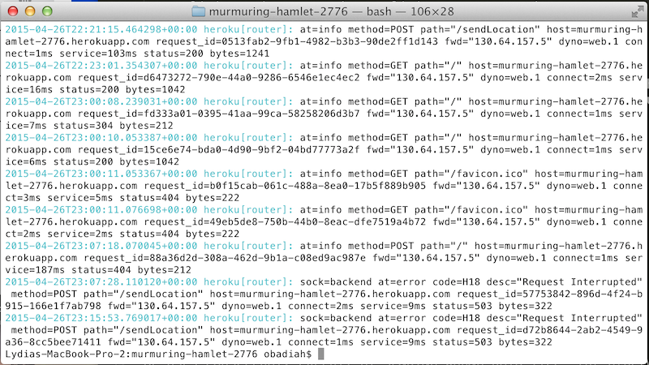

Marauder's Map + Server Security Report
Introduction
The "Marauder's Map" is a web application by a Comp 20 student which allows the client to "check in" with their GPS coordinates (using an anonymized login) and see the timestamped coordinates of all other users who have "checked in". There is a username (WHAT'S THE USERNAME?) hard-coded into the web interface, located here. The current web interface user's location is marked on the map - created using the Google Maps API - with a custom marker, while all other check-ins are indicated by the default markers provided by Google Maps. Users can also "check in" by submitting a login and GPS coordinates, in JSON format, directly to the server, which will respond with a JSON file containing the updated list of check-in locations.
This report will detail the security vulnerabilities found in the application (both the server and the web interface). It is concerned with simple vulnerabilities that could easily be exploited by an amateur using free tools such as curl and tactics such as XSS (cross-site scripting), and flaws in the code and data handling of the application itself, rather with questions of copying and misuse of the entire work.
Methodology
First, I conducted "black box" testing, without consulting the application code. I used curl to test for cross-site scripting vulnerabilities. Then, I consulted the code and conducted "white box" testing. I used the Google Chrome extension Postman to send unexpected data to the application and test for crashes.
Abstract of Findings
The application has at least three vulnerabilities. First, anyone can send it data that will cause it to render potentially malicious content on the user's browser when the application homepage is accessed (http://murmuring-hamlet-2776.herokuapp.com/). Anyone can also send it data of the incorrect file type, or an extremely high volume of data, both of which cause the server to crash. All of these vulnerabilities result from the fact that data sent by the user is accepted and processed by the server almost immediately, with virtually no security checks
Issues Found
XSS Vulnerability
Incorrect filetype crash
- Expected data fields can be submitted with file types other than text/JSON and will be accepted by the POST /sendLocation API, since the fields still contain data and are not "null". Subsequent processing of this incorrect file type causes the server to crash.
- This issue affects the server application itself, but anyone using the application will no longer be able to do so when the server crashes.
- I used Postman to submit a PDF file as the "lat" field of a POST request:

This caused the server to crash:

- Severity of threat: High - In my test cases, the server came back online within a few minutes. However, it's possible that larger or intentionally malicious files could more seriously damage the server or compromise the privacy of the data stored in it.
- Resolution: This issue can be solved by checking the request header for the content-type of each item:

To do this, code should be included, before even the null checks on incoming data, which checks in the request header that the "Content-Type" value is set to "application/json".
High-volume text crash
- A very long request, even of the correct file type, is accepted by the POST /sendLocation API. It attempts to process it and crashes.
- As above: This issue affects the server application itself, but anyone using the application will no longer be able to do so when the server crashes.
- I used Postman to send approximately half of the text (53 chapters plus a few paragraphs) of Herman Melville's Moby-Dick, in plain text (the expected type), as the value of the "login" field of the request:

This caused the server to crash:

- Severity of threat: Medium - Enough text dumping might severely break the database, or simply take up so much space that the host would need to begin paying for what they had been using as a free service. This could permanently crash the application until the database were manually repaired or dumped. However, it would not download malicious content, redirect the user, or deface the site.
- Resolution: Once user input passes the filetype checks, but before reaching the null checks, code should be added which counts the characters in each field and stops after some arbitrary, low number - neither coordinate should be longer than 11 characters, and there is no reason for the username to be longer than 20. If any counter reaches the arbitrary value before the end of the string, the input should not be processed.
Conclusion
There are several serious vulnerabilities in the Marauder's Map which could allow it to be exploited, to the detriment of users - via XSS malicious content and malicious files uploaded to the database - as well as to the application, through malicious files uploaded to the database and to text dumping. Fortunately, however, all of these issues can be rectified with the above described security checks on incoming data to the POST /sendLocation API:
- Check the content-type header of each request; throw out anything not "application/json".
- Check the length of each field of the request; throw out anything longer than a reasonable limit (11-20 characters).
- Check the request for special characters; encode them using HTML encoding, so they will not execute as script, only render as text.
These changes would be quick and simple to write, and are strongly recommended for the security of the application and the safety of its users.